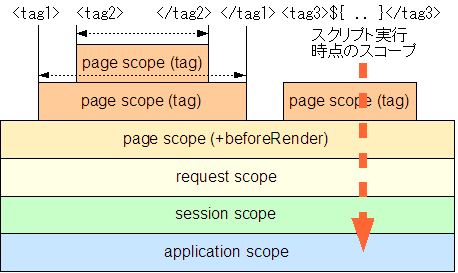

appendix A. JSP カスタムタグを使う場合の注意点
Maya で JSP カスタムタグを利用する場合、JSP カスタムタグの仕様と異なる点があります。
JSTL を使う場合に注意する点は、動的な値の扱い方の違い、スクリプト変数のスコープの違いの 2 点です。
動的な値の扱い方の違い
JSP との大きな違いは、動的な値の扱い方です。JSP カスタムタグの動的な値の扱い方は 3 種類あります。それぞれの場合について、JSP と Maya の違いを説明します。
RT 版 (JSTL 1.0)
Maya が動的な値を処理します。
RT 版とは、動的な値に Scriptlet を使うものです。TLD で rtexprvalue に true が設定されている属性に Scriptlet を使えます。たとえば次のような書き方をします。
<c:out value="<%= name %>" />
Maya では Scriptlet の位置に ${ .. } の形式でスクリプトを書きます。評価結果がカスタムタグに渡ることは JSP と同じです。
<c:out value="${ name }" />
Maya で RT 版を使う場合、動的な値は ${ .. } の形式でスクリプトを記述してください。
JSP 1.2 EL 版 (JSTL 1.0)
カスタムタグが動的な値を処理します。
EL 版とは、動的な値にカスタムタグの式言語を使うものです。TLD ですべての属性に rtexprvalue に false が設定されています。たとえば次のような書き方をします。
<c:out value="${ name }" />
JSP 1.2 EL 版では、文字列のままカスタムタグに渡され、カスタムタグの処理として式言語の評価が行われます。従って JSP 1.2 EL 版の動作は JSP と Maya に違いはありません。ただし、Maya のスクリプトと記述方法が同じなため混同しないよう注意してください。
Maya で JSP 1.2 EL 版を使う場合、${ .. } の中には JSP 1.2 仕様の EL を記述してください。
JSP 2.0 EL 版 (JSTL 1.1)
Maya が動的な値を処理します。
JSP 2.0 EL 版は JSP 1.2 EL 版と違い、式言語の評価を JSP コンテナが行います。rtexprvalue に true が設定されている属性に式言語を使えます。Maya は JSP コンテナとして振舞いますので、式言語の評価も Maya の役目になります。Maya で式言語にあたるのはスクリプトですから、${ .. } という記述を Maya がスクリプトとして評価します。従って Maya の場合、RT 版と JSP 2.0 EL 版で動的な値の扱い方は同じです。
Maya で JSP 2.0 EL 版を使う場合、${ .. } は Maya のスクリプトとして記述してください。
Maya のスクリプトと式言語の違い
Maya のスクリプトは JavaScript (ECMA Script: 実装は Rhino) です。文法は当然 Java と異なりますが、それ以外にも最終結果として Java のオブジェクトまたはプリミティブ値として返すときに期待する動作と異なる場合があります。
たとえば「スクリプトでオブジェクトを出力する」の例では、結果として「3」を期待したところ「3.0」が返ってきました。これは JSP カスタムタグが Object 型を受け取るように作られているために型を決定できず、最も精度の高い double で渡していることが原因です。
この例の場合に限れば、文字列に変換した後で渡す fmt:numberFormat を使うなどの回避策があります。式言語の暗黙的な動作を期待しているカスタムタグの場合はこのような回避策を取る必要があるかもしれません。
スクリプト変数のスコープの違い
JSP カスタムタグで「スクリプト変数」を定義する (たとえば c:set) 場合、スクリプト変数は page スコープに置かれ、有効な範囲はカスタムタグによってコントロールされます。(AT_BEGIN (タグ開始からページ終わりまで), AT_END (タグ終了からページ終わりまで), NESTED (タグ開始からタグ終了まで))
しかし Maya の場合すべてのタグは自分の変数スコープを持ち、その範囲は NESTED (タグ開始からタグ終了まで) になります。従って c:set タグで scope="page" と指定した場合、もしくは scope を指定しない場合は実質的に何も行われません。c:set タグを使う場合、scope は request, session, application のいずれかを指定してください。page スコープにスクリプト変数をセットする JSP カスタムタグはすべて同様です。

暗黙的ですが、JSTL core の c:catch タグは catch した例外を page スコープに格納します。このため c:catch タグを Maya で使う場合、変数にセットした例外は読み出される前に消えてしまいます。